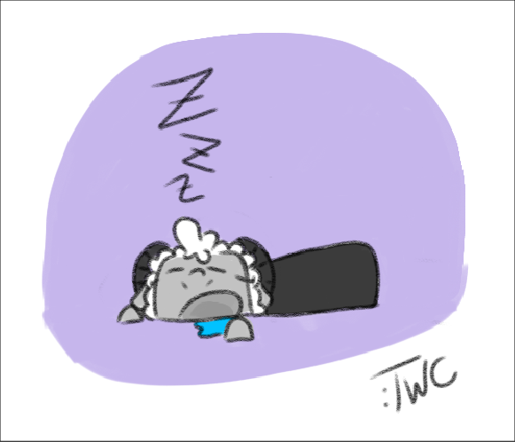
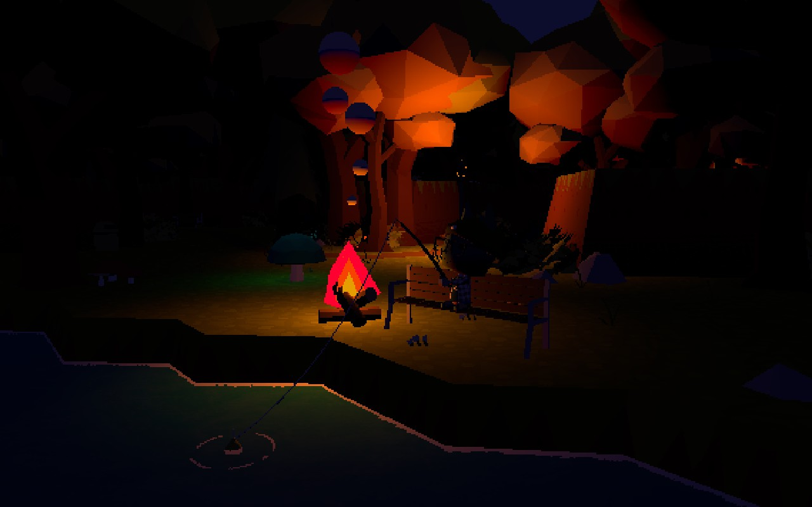

read my inner dialogue like a book
Finally completed something for a course I've been stressed all semester about, but I think I'm pretty much done with that entire class now. Graduation might actually be possible holy
3:18pm - 3/14/2026
I got into Grace for the gameplay, but stayed for the MUSIC. holy crap this soundtrack slaps, and of all things, I can't get that gorgeous animal-crossing style lobby theme out of my head. It's so beautiful. How do I learn to compose like this
1:12am - 3/11/2026
i really need to finally sit down with stardew valley and get into it already but im afraid of how much time im going to lose when i do
10:37pm - 3/8/2026
finally beat pressure lockerless after a few attempts! I almost got all the way through damageless but then the first room in the ridge trapped me in a locker next to a pdg speaker while a froger went back and forth. thank you game, very cool
4:10pm - 3/4/2026
been oversleeping way too much. doc got a new med for me that may improve things in that regard, but we'll see!

3:52pm - 2/26/2026
The new rift fishing demo came out today and I don't know if it's just me but I just can't get into it. I adore webfishing so much and I get why it's not being updated anymore, but rift just doesn't have the sauce I'm looking for. maybe that'll change once I get some more time in it, but it's hard for me to not compare it to this

12:44am - 2/26/2026
got some good work done today, finished the music page. feelin good about progress
A part of me wants to carry over the card styling from the music & code pages to this but idk how it would look
8:33pm - 2/24/2026
the backrooms trailer dropped today, made by the same guy who did the really awesome web series about it
After loving Iron Lung I am on board for more indie psychological horror

1:56pm - 2/24/2026
new strategy: computer off by midnight, no more all-nighters. If I want to actually pass my freaking classes I have to stop doing this. also the site now has mobile improvements and a cool fancy dynamic footer, woah

11:54pm - 2/23/2026
yeah I crashed. didn't take long. but, uh, I think I should be able to reset myself properly before tomorrow. here's hopin
9:33pm - 2/23/2026
okay the js is done, that's gonna be where I leave things for now. might work on it more later today if I don't crash after work & school, but we'll see...
9:21am - 2/23/2026
on the one hand, i lost a night of sleep in an effort to make this website.
on the other, i was awake when massive monster dropped the wip draft of the next COTL animation.
I think this was a net positive

8:21am - 2/23/2026
saw someone make a scrolling tab of icons on their site annd now I REALLY want to rework my footer to do the same, that way I won't run out of space when I inevitably want to put more icon cards there
7:18am - 2/23/2026
Wait so do people actually find these sites on neocities? Are people able to read this right now just by browsing the website? I just took a look at the stats and somehow I have two followers in the past like 4 hours of work what the heck happened
7:07am - 2/23/2026
listening to markiplier play help wanted 2 though has been very nice while i bang my head against this project
6:28am - 2/23/2026
I probably shouldn't have pulled another all-nighter working on this site but it's too fun
part of the problem is the fact that my courses haven't really let me just mess around like this honestly
6:19am - 2/23/2026
End of thought log